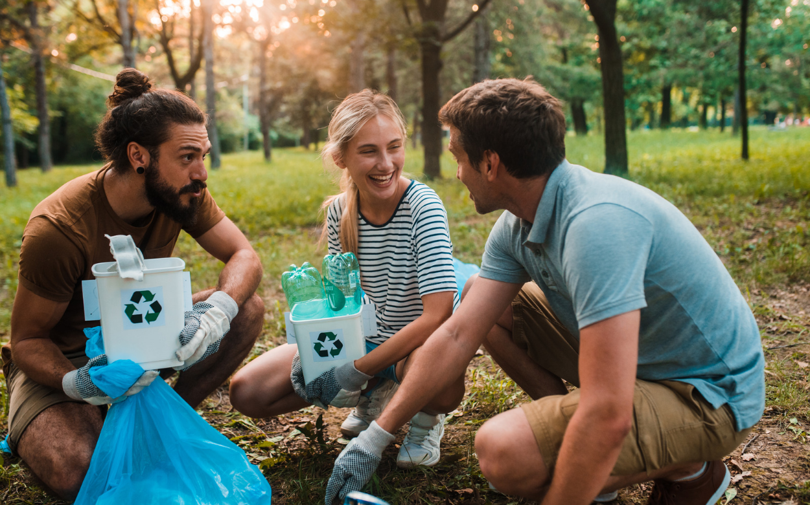

Missão
Transformar hábitos cotidianos em ações conscientes que preservam o meio ambiente, promovendo a prática da reciclagem e a sustentabilidade para jovens e adultos.
Nossa História
Tudo começou com a vontade de mudar o mundo, um hábito de cada vez. Percebemos que muitas pessoas ainda têm dificuldade em entender como podem contribuir para o meio ambiente. Então, decidimos criar uma plataforma que não apenas informa, mas também inspira.
Nosso objetivo é descomplicar o processo, engajar pessoas de todas as idades e construir um futuro mais limpo e saudável para todos. 🌱♻️
Visão
Sonhamos com um mundo onde reciclar seja parte da rotina de todos. Acreditamos no poder da educação e da conscientização para transformar o planeta em um lugar mais verde e sustentável.

Quem está por trás da EcoBio
A EcoBio é fruto da visão apaixonada de Luiza Rosa Florea, uma sonhadora que acredita no poder da sustentabilidade para transformar vidas e comunidades. Sua determinação em criar um impacto positivo no mundo deu vida a um projeto que inspira, conecta e promove mudanças reais.